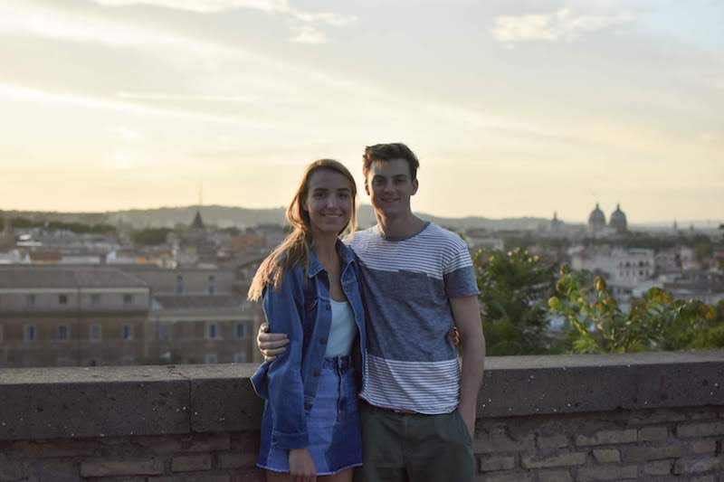
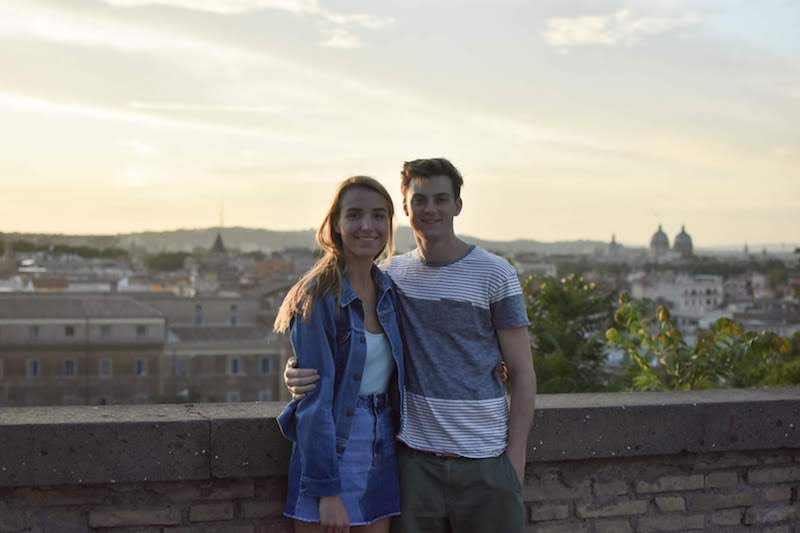

About


 



I'm Ethan Eisenhard a graduate of a Bachelor of Science Degree in Computer Design and Development from The Pennsylvania State University. My interest in web development began at my first job creating websites for local businesses. I learned to work with clients, design responsive websites, and optimize search engine results. Inspired by this I went on to learn web development on a corporate level interning at Toll Brothers. On the Penn State campus, I learned about leadership and management roles as the President and Founder of the Photography Club and the Resident Assistant of over fifty students. Using these skills, I have developed my own business designing websites and taking professional photos.
I am currently working for Toll Brothers as a Web Developer and available as a freelancer. I
would love to hear about your next idea!
Have a great day!
I was born in Boston, 3rd son, of 4 boys and 1 girl. We move to Philadelphia when I was 6 months old and I have lived there ever since. Go Eagles!! Following preschool I went to public school for elementary, middle school, and high school. At some point during my freshmen year of high school I got into trouble for skipping school. This was a pivotal moment, I began to see the world differently. Before I didn't care about much, I saw no consequences of my actions. Now I saw what could happen to me, my family, and my friends if I didn't take my responsibilities serious. Slowly inside, I began to form ambitions that would soon turn into dreams and realizations.
In my senior year of high school, I applied to Penn State and got in. In order to go to Main Campus I would start my college career early during the summer of 2014. Whether it was the partying, the lack of studying, or effort I failed my first semester. It was another moment that changed the way I saw education. Gaining more focus, over the next four years I became a completely different person. I picked up a camera and started the photography club, I became a RA mentoring students, and worked as a lifeguard at the school pools. I began to meet like minded people and really broke out of my comfort zones which made me more self aware then I have ever been in my life. In the summer of 2016 I started an internship building websites for a company called Surge Business Development. This is where I fell in love with web development. I ran with it. I learned how to build sites using HTML, CSS, JS, and Wordpress. I talked with clients, optimized search engine results, and designed responsive sites. Over the next year, I would spend hours mastering my skills. I remember on winter break I spent an entire day in the public library coding. The next summer I got another internship with the Toll Brothers. They said my code was brilliant and offered me a job right on the spot.
During my internship with Toll Brothers I grew my web development skills further learning both front and back end code. I learned the importance of testing sites, how to increase traffic, and lead optimization. After my internship ended, I was offered the ability to work remotely at school to continue learning. In May of 2018, I graduated with a Bachelor of Science Degree in Computer Design and Development with a minor in Cyber Security at The Pennsylvania State University. After graduation I traveled with my girlfriend around Europe for a month, seeing Italy, Switzerland, Amsterdam, and France. When I got back I started my full time position as a Web Developer at Toll Brothers. My main role is assisting web teams on various projects on tollbrothers.com, lifestyle sites, and various internal web apps. As well as collaborating and participating with team members for standup, review, and concept meetings. I love working for the Toll Brothers, I walk into the office with a smile everyday knowing I am going to laugh, learn, and love what I am doing.
In addition to working for the Toll Brothers, I have developed my own company building sites for local businesses and taking professional photos. Some of my most recent companies I have worked with are Safety First Aquatics, Charlestown Capital Partners, and brands such a American Eagle. As I continue to grow my skills, my customers sites are improving. I provide solutions for SEO, website redesign, hosting, CMS, lead generation, Google Ads/Business, and social media marketing. Furthermore, I have a fully functioning professional photography studio. I work with senior graduates, families, and models. I also love to collaborate with other artists in the Philadelphia area.
As I continue on this awesome journey of adventures and professional development, I find that the more I learn about my self the more I can help others. In the next year, my goal is to start teaching both web development and photography courses. There is nothing more empowering than teaching others the tools you have learned.
Have an idea, project, or just want to chat, drop me a message on my contact form.